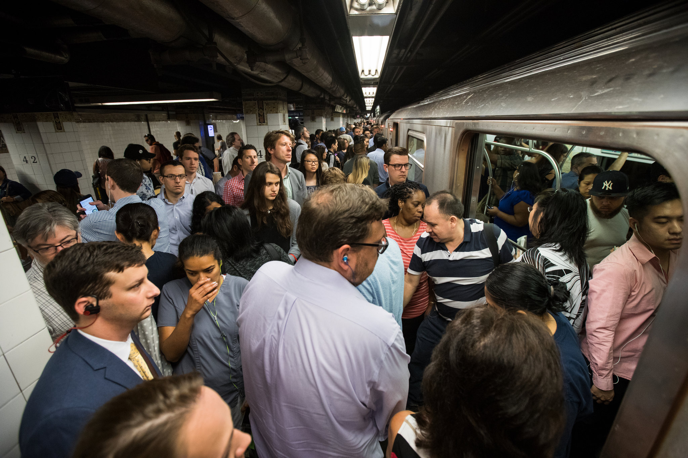
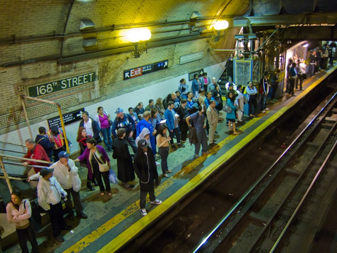
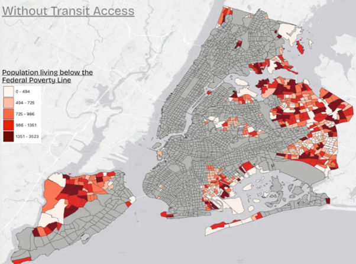
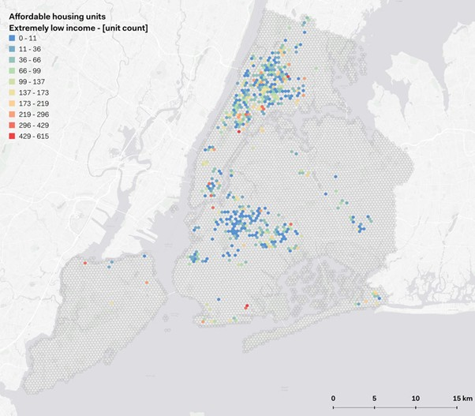
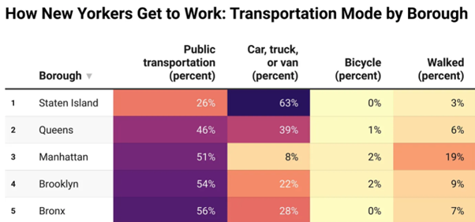
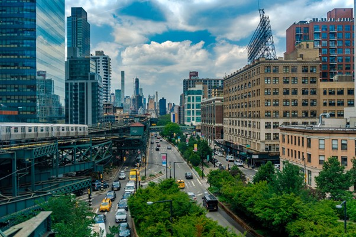

Who can access the subway — and who is left behind?
A spatial investigation into transit equity across New York City's five boroughs.
New York City operates one of the world's largest subway networks — 472 stations spanning 245 miles of track. Yet the distribution of stations is far from uniform. The map below shows subway lines, stations, and their walking-distance buffers.

"But access only matters when people actually need it. To understand inequality, we must first ask: where do people live?"
Population density maps reveal where transit demand is highest. When overlaid with subway infrastructure, a structural mismatch begins to appear — dense communities are not always the ones with the strongest coverage.

Key finding: High population density does not guarantee strong transit access. This mismatch begins to reveal structural inequality.
When socioeconomic data is layered onto transit access, a clear pattern emerges. Lower-income communities are disproportionately concentrated in zones with the weakest subway coverage — compounding existing disadvantage.


Key insight: Transit inequality is both spatial and social. Where you live shapes what you can access — and what opportunities are within reach.

Stations are concentrated in Manhattan, leaving large portions of the outer boroughs underserved — despite covering millions of residents.
Population density and transit coverage do not align. Staten Island is 63% car-dependent, yet is part of the same city as car-free Manhattan.
Residents of eastern Queens, the South Bronx, and southeastern Brooklyn face longer commutes, slower buses, and higher transport costs relative to income.
Lower-income communities consistently appear in areas with weaker transit coverage, amplifying inequality in employment, healthcare, and education access.
Comparing three neighborhoods illustrates how geography, income, and infrastructure converge to create radically different transit experiences within the same city.

Access to public transportation is not distributed equally across New York City. The subway system — though vast — is concentrated in areas that were already well-served, leaving large populations in the outer boroughs without reliable, frequent service.
Geography and income are the two strongest predictors of transit access. Those who live furthest from subway stations are, on average, those who can least afford the time or financial cost of longer, fragmented commutes.
Inequality in transit does not exist in isolation — it amplifies inequality in employment, education, healthcare, and social mobility. Closing the transit gap is not merely a transportation question. It is a question of social justice.
The city that never sleeps runs on a transit system that does not serve all its residents equally. Addressing this requires not just new lines, but a fundamental rethinking of who infrastructure is built for — and who gets left behind.
Explore all three spatial layers. Zoom, pan, and toggle layers to draw your own conclusions.